NCERT भूगोल (कक्षा 10) - अध्याय 3
जल संसाधन (Water Resources) - विस्तृत संपूर्ण मास्टर नोट्स
जल हमारे जीवन और संपूर्ण पारिस्थितिकी तंत्र का आधारभूत प्राकृतिक संसाधन है। पृथ्वी का लगभग तीन-चौथाई (71%) धरातल जल से ढका हुआ है, परंतु इसमें से मानव उपयोग योग्य मीठे अथवा अलवणीय जल (Freshwater) का अनुपात अत्यंत कम है। जल एक नवीकरण योग्य संसाधन (Renewable Resource) है क्योंकि यह निरंतर जलीय चक्र (Hydrological Cycle) द्वारा गतिशील और पुनर्नवीकृत होता रहता है।
💡 जलीय चक्र (Hydrological Cycle) के 3 मुख्य प्रक्रम:
• 1. वाष्पीकरण एवं वाष्पोत्सर्जन (Evaporation & Transpiration): सौर ताप से महासागरों, झीलों तथा वनस्पतियों से जलवाष्प बनकर वायुमंडल में उठना।
• 2. संघनन एवं वर्षण (Condensation & Precipitation): ऊपर उठकर ठंडी हुई वाष्प का बादलों में संघनित होना तथा वर्षा/बर्फ के रूप में धरातल पर गिरना।
• 3. सतही अपवाह एवं अंतःस्यंदन (Runoff & Infiltration): वर्षा जल का नदियों के रास्ते वापस समुद्र में मिलना तथा जमीन में रिसकर भौम जल (Groundwater) का पुनर्भरण करना।
NCERT पाठ्यपुस्तक के अनुसार पृथ्वी पर विद्यमान जल का सटीक वितरण निम्नलिखित है:
- महासागरीय लवणीय जल: विश्व के कुल जल आयतन का 96.5 प्रतिशत भाग महासागरों में खारे पानी के रूप में है, जो प्रत्यक्ष पीने या सिंचाई योग्य नहीं है।
- कुल अलवणीय/मीठा जल: संपूर्ण पृथ्वी पर केवल 2.5 प्रतिशत जल ही अलवणीय (Freshwater) है।
- हिमनद व बर्फ की चादरें: इस 2.5% मीठे पानी का लगभग 70 प्रतिशत भाग अंटार्कटिका, ग्रीनलैंड और पर्वतीय क्षेत्रों में बर्फ व हिमनदों के रूप में जमा है।
- भौम जल (Groundwater): मीठे पानी का 30 प्रतिशत से थोड़ा कम भाग भूमिगत जलभरों (Aquifers) में भौम जल के रूप में संचित है।
- नदियां व झीलें: 1 प्रतिशत से भी कम जल नदियों व झीलों में सतही रूप से बहता है।
📌 NCERT चेतावनी तथ्य: भारत विश्व की कुल वर्षा का मात्र 4 प्रतिशत भाग प्राप्त करता है तथा प्रति व्यक्ति प्रति वर्ष जल उपलब्धता के मामले में विश्व में 133वें स्थान पर है। अनुमान है कि 2025 तक भारत का एक बड़ा हिस्सा विश्व के उन देशों में शामिल हो जाएगा जहाँ जल की नितांत कमी होगी।
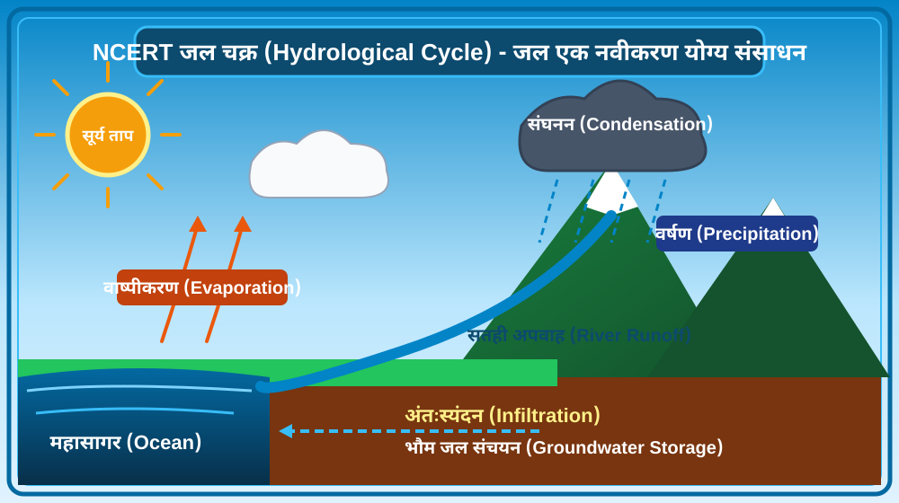
चित्र 3.1: जल चक्र (Hydrological Cycle) - जल का निरंतर नवीकरण।
📌 विषय-वस्तु विश्लेषण (जल चक्र):
• सौर ताप से समुद्रों से वाष्पीकरण, वायुमंडल में संघनन द्वारा बादलों का निर्माण, धरातल पर वर्षण तथा नदियों द्वारा सतही अपवाह का प्राकृतिक चक्र।
• अंतःस्यंदन (Infiltration) द्वारा भूमिगत जल का प्राकृतिक पुनर्भरण।
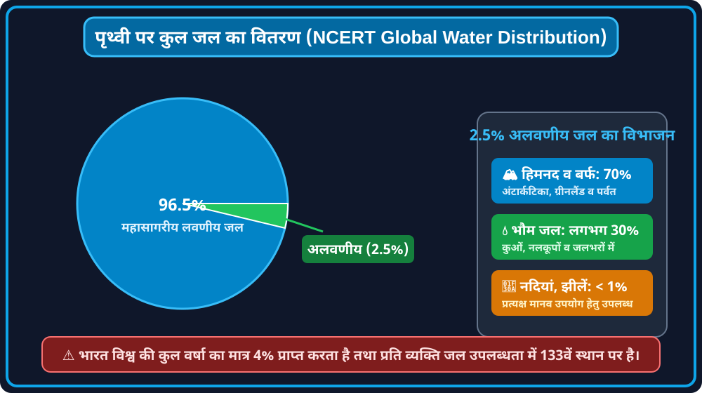
चित्र 3.2: पृथ्वी पर कुल जल का वितरण (Global Water Distribution)।
📊 आंकड़े एवं तथ्य विश्लेषण:
• पृथ्वी पर 96.5% खारा पानी तथा मात्र 2.5% मीठा पानी उपलब्ध है।
• 2.5% मीठे पानी में से 70% हिमनदों में तथा लगभग 30% भौम जल के रूप में संचित है।
जल दुर्लभता (Water Scarcity) का सामान्य अर्थ जल की मांग की तुलना में उसकी उपलब्धता में कमी होना है। प्रायः यह माना जाता है कि जल दुर्लभता केवल कम वर्षा वाले मरुस्थलीय क्षेत्रों (जैसे पश्चिमी राजस्थान) में होती है, परंतु वास्तव में जल प्रचुरता वाले क्षेत्रों में भी अत्यधिक दोहन, असमान वितरण और प्रदूषण के कारण भीषण जल संकट उत्पन्न हो जाता है।
- तीव्र जनसंख्या वृद्धि: विशाल और बढ़ती जनसंख्या के कारण घरेलू उपयोग, पेयजल तथा खाद्यान्न उत्पादन हेतु जल की मांग तेजी से बढ़ रही है।
- सघन कृषि एवं सिंचित क्षेत्र का विस्तार: अधिक अनाज पैदा करने हेतु शुष्क ऋतु में भी सघन सिंचाई की जा रही है। किसानों द्वारा अपने खेतों में नलकूप लगाकर भूजल का अत्यधिक दोहन किया जा रहा है, जिससे भूजल स्तर (Water Table) खतरनाक रूप से नीचे गिर गया है।
- तीव्र औद्योगीकरण एवं नगरीकरण: स्वतंत्रता के बाद उद्योगों की संख्या में भारी वृद्धि हुई है। उद्योग न केवल भारी मात्रा में जल का उपभोग करते हैं बल्कि इनके संचालन हेतु जलविद्युत ऊर्जा की भी आवश्यकता होती है। (भारत में कुल विद्युत उत्पादन का लगभग 22 प्रतिशत भाग जलविद्युत से प्राप्त होता है)। शहरों की बहुमंजिला हाउसिंग सोसायटियों में निजी बोरवेलों ने संकट और बढ़ा दिया है।
- जल की खराब गुणवत्ता एवं प्रदूषण: कई क्षेत्रों में पर्याप्त मात्रा में जल उपलब्ध होने के बावजूद वह घरेलू व औद्योगिक अपशिष्टों, रासायनिक खादों व कीटनाशकों के मिलने से इतना जहरीला हो चुका है कि मानव उपभोग के योग्य नहीं रहा।
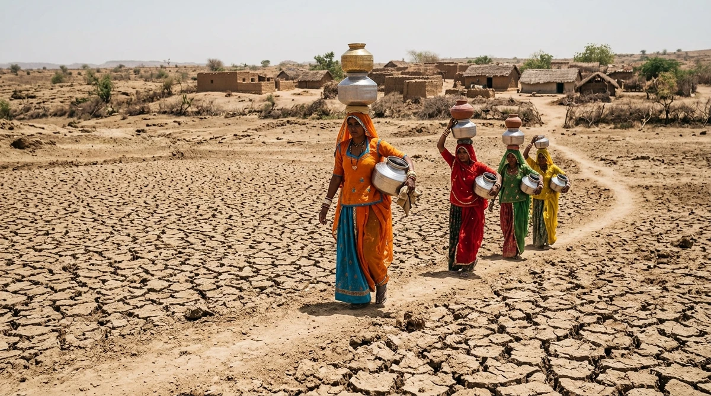
चित्र 3.3: भीषण जल दुर्लभता - शुष्क भूमि एवं मीलों दूर से जल लाती महिलाएं।
🏜️ वास्तविक दृश्य अवलोकन:
• भूजल स्तर गिरने और वर्षा की अनिश्चितता से दरकती सूखी जमीन पर मटकों में दूर-दराज से पानी लाती ग्रामीण महिलाएं।
• जल दुर्लभता केवल पानी की कमी नहीं बल्कि सामाजिक व आर्थिक कठिनाई का प्रत्यक्ष कारण है।
भारत की अधिकांश नदियां, विशेषकर छोटी नदियां जहरीले नालों में परिवर्तित हो चुकी हैं तथा गंगा और यमुना जैसी विशाल नदियां भी औद्योगिक कचरे, शोधित न किए गए सीवेज और रासायनिक अपशिष्टों के मिलने से अत्यधिक संदूषित हो गई हैं।
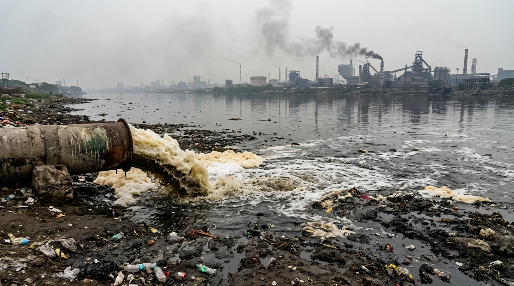
चित्र 3.4: औद्योगिक अपशिष्ट एवं जहरीले झाग से प्रदूषित होती नदियां।
☣️ पर्यावरणीय संकट दृश्य:
• कारखानों के बड़े पाइपों से बिना शोधन के निकलता रासायनिक गंदा पानी और झाग जो स्वच्छ जलस्रोतों को नष्ट कर रहा है।
• इसके कारण प्रचुर जल वाले क्षेत्रों में भी जल उपभोग योग्य नहीं रहता।
प्राचीन काल से ही भारत में वर्षा जल और नदियों के बहाव को नियंत्रित व संचित करने के लिए पत्थर व मिट्टी के बांध, जलाशय, झीलें और नहरें बनाने की समृद्ध परंपरा रही है।
NCERT के अनुसार प्राचीन भारत के उत्कृष्ट जल संरक्षण प्रमाण निम्नलिखित हैं:
- श्रृंगवेरपुरा (इलाहाबाद/प्रयागराज के निकट): ईसा पूर्व प्रथम शताब्दी में गंगा नदी के बाढ़ जल को सुरक्षित संचित करने के लिए एक उत्कृष्ट जल संवहन प्रणाली बनाई गई थी।
- चंद्रगुप्त मौर्य का काल: मौर्य साम्राज्य के दौरान वृहद स्तर पर बांधों, झीलों और सिंचाई तंत्रों का निर्माण किया गया (जैसे गुजरात के गिरनार में सुदर्शन झील)।
- भोपाल झील (11वीं शताब्दी): अपने समय की सबसे बड़ी कृत्रिम झीलों में से एक, जिसका निर्माण राजा भोज के काल में हुआ।
- हौज खास (दिल्ली - 14वीं शताब्दी): सुल्तान इल्तुतमिश ने सीरी फोर्ट क्षेत्र में जल आपूर्ति हेतु इस प्रसिद्ध विशाल हौज/जलाशय का निर्माण करवाया था।
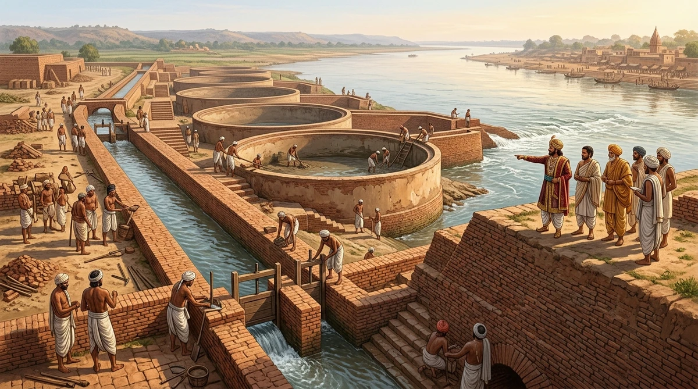
चित्र 3.5: प्राचीन भारत का हाइड्रोलिक इंजीनियरिंग चमत्कार - श्रृंगवेरपुरा (प्रयागराज)।
🏛️ ऐतिहासिक तथ्य दृश्य:
• ई.पू. 1वीं सदी में गंगा नदी के बाढ़ जल को ईंटों की पक्की नहरों व गोलाकार निस्यंदन कुंडों (Settling Tanks) द्वारा सुरक्षित मोड़ने की तकनीकी व्यवस्था।
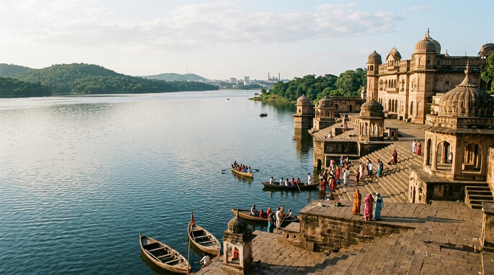
चित्र 3.6: 11वीं शताब्दी की विशाल कृत्रिम भोपाल झील (राजा भोज द्वारा निर्मित)।
🌊 जल संरक्षण विरासत:
• मध्यकालीन भारत की विशालतम कृत्रिम झीलों में से एक, जिसने सदियों तक संपूर्ण नगर को स्वच्छ पेयजल उपलब्ध कराया।
बांध क्या है? बहते जल के मार्ग में बाधा डालकर जल के प्रवाह को रोकना, धीमा करना या एक दिशा देना, जिससे एक जलाशय अथवा झील का निर्माण होता है।
⭐ पं. जवाहरलाल नेहरू का ऐतिहासिक कथन:
पंडित जवाहरलाल नेहरू गर्व से बांधों को "आधुनिक भारत के मंदिर" (Temples of Modern India) कहा करते थे। उनका मानना था कि इन परियोजनाओं के कारण कृषि और ग्रामीण अर्थव्यवस्था का औद्योगिकीकरण तथा नगरीय अर्थव्यवस्था के साथ एकीकृत व समन्वित विकास होगा।
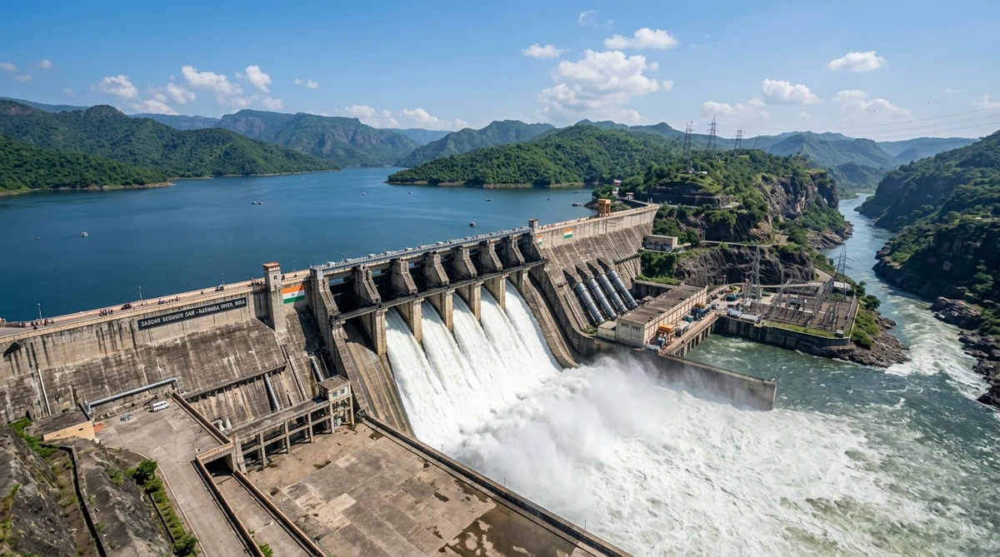
चित्र 3.7: बहुउद्देशीय बांध - विशाल जलाशय, स्पिलवे व जलविद्युत शक्ति गृह।
⚡ बहुआयामी इंजीनियरिंग:
• बांध के स्पिलवे से तीव्र गति से गिरता पानी, पीछे विशाल जल भंडार तथा बगल में स्वच्छ जलविद्युत उत्पन्न करता पावर हाउस।
| क्र.सं. |
परियोजना / बांध |
नदी |
लाभान्वित राज्य |
मुख्य विशेषता |
| 1 |
भाखड़ा नांगल |
सतलुज - ब्यास |
पंजाब, हरियाणा, राजस्थान, हि.प्र. |
जलविद्युत एवं सिंचाई का विशाल केंद्र |
| 2 |
टिहरी बांध |
भागीरथी (गंगा) |
उत्तराखंड |
भारत का सबसे ऊंचा बांध (260.5 मीटर) |
| 3 |
हीराकुंड बांध |
महानदी |
ओडिशा |
विश्व का सबसे लंबा मुख्य मिट्टी का बांध (25.8 किमी) |
| 4 |
सरदार सरोवर |
नर्मदा |
गुजरात, राजस्थान, म.प्र., महाराष्ट्र |
कच्छ व सौराष्ट्र के सूखाग्रस्त क्षेत्रों में जलापूर्ति |
| 5 |
राणा प्रताप सागर |
चंबल |
राजस्थान एवं मध्य प्रदेश |
चंबल घाटी बहुउद्देशीय परियोजना |
| 6 |
नागार्जुन सागर |
कृष्णा |
आंध्र प्रदेश व तेलंगाना |
दक्षिण भारत की प्रमुख सिंचाई परियोजना |
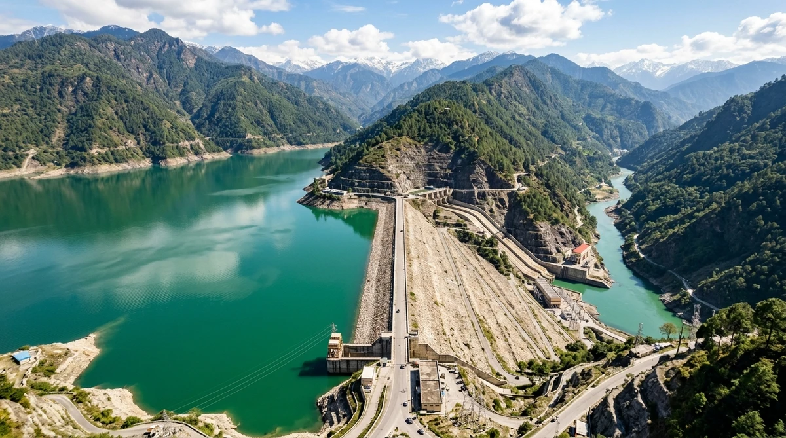
चित्र 3.8: भारत का सबसे ऊंचा बांध - टिहरी बांध (भागीरथी नदी, उत्तराखंड)।
🏔️ भौगोलिक महत्व:
• 260.5 मीटर ऊंचा विशाल बांध जो हिमालय की गहरी घाटी में जल संचित कर भारी मात्रा में जलविद्युत और सिंचाई जल प्रदान करता है।
हाल के वर्षों में बड़े बांधों पर गंभीर आपत्तियां उठाई गई हैं:
- नदियों का प्राकृतिक बहाव व तलछट अवरोध: तलछट (Sediment) जलाशय की तली में जमने से नदी तल अधिक पथरीला हो जाता है और जलीय जीवों के प्रवास में बाधा आती है।
- प्राकृतिक वनों का जलमग्न होना: हजारों हेक्टेयर सघन वन और उपजाऊ भूमि डूबने से मीथेन गैस का उत्सर्जन और जैव विविधता की हानि होती है।
- स्थानीय समुदायों का भारी विस्थापन: जनजातियों और ग्रामीणों को अपनी पैतृक भूमि व आजीविका गंवानी पड़ती है।
- मृदा लवणीकरण एवं अंतर्राज्यीय विवाद: अत्यधिक नहरी सिंचाई से भूमि का लवणीकरण (Salinization) और राज्यों के मध्य कावेरी, कृष्णा-गोदावरी जैसे जल विवाद।
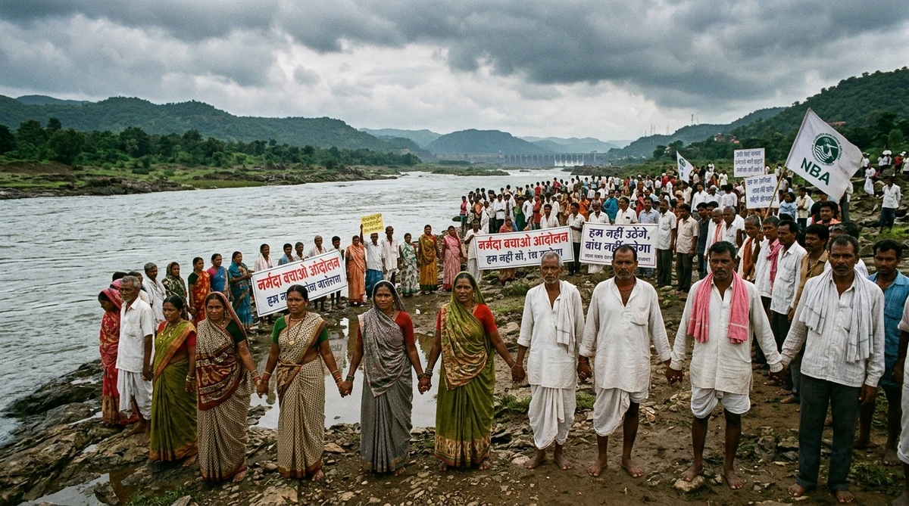
चित्र 3.9: नर्मदा बचाओ आंदोलन - बांध विस्थापितों एवं पर्यावरण का संघर्ष।
✊ सामाजिक संघर्ष तथ्य:
• मेधा पाटकर के नेतृत्व में सरदार सरोवर बांध से विस्थापित जनजातीय परिवारों व ग्रामीणों के पूर्ण पुनर्वास हेतु ऐतिहासिक जन-आंदोलन।
बड़े बांधों के दुष्प्रभावों और भारी लागत के विकल्प के रूप में वर्षा जल संग्रहण (Rainwater Harvesting) एक अत्यंत टिकाऊ व पर्यावरण अनुकूल समाधान है।
घरों की छतों पर गिरने वाले वर्षा जल को पाइपों के माध्यम से संचित कर फ़िल्टर करके भूमिगत टैंक (टांका) अथवा कुएं में भेजा जाता है।
📌 तमिलनाडु मॉडल: तमिलनाडु भारत का पहला राज्य है जहाँ प्रत्येक घर में छत वर्षा जल संग्रहण ढांचा बनाना कानूनी रूप से अनिवार्य है।
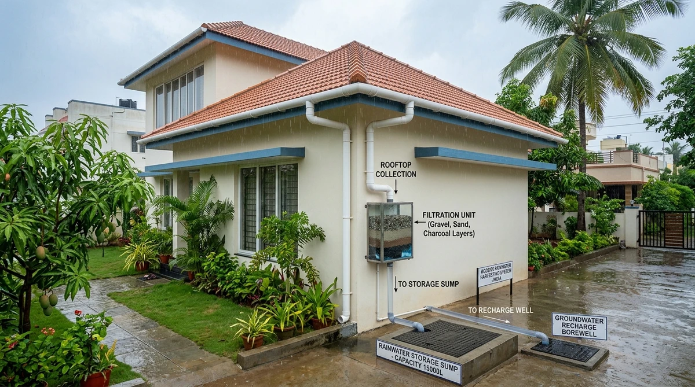
चित्र 3.10: आधुनिक छत वर्षा जल संग्रहण (Rooftop Harvesting & Recharge)।
🏠 प्रणाली का प्रवाह:
• छत से PVC पाइप ➔ रेत-बजरी फ़िल्टर चैंबर ➔ भूमिगत स्टोरेज टैंक एवं भूजल पुनर्भरण बोरवेल।
राजस्थान के बीकानेर, फलोदी और बाड़मेर में प्रत्येक घर के आंगन या कमरे के नीचे पक्का भूमिगत जलकुंड होता है जिसे 'टांका' कहते हैं। इसमें संचित वर्षा जल को 'पार्लर पानी' कहा जाता है, जो पीने का सबसे शुद्ध प्राकृतिक जल माना जाता है।
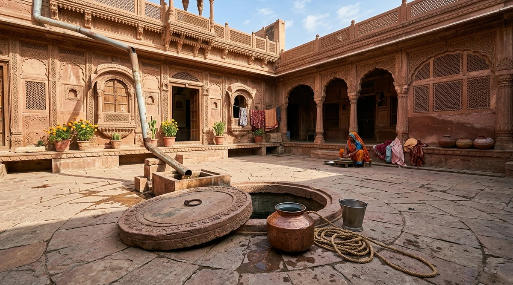
चित्र 3.11: पश्चिमी राजस्थान का पारंपरिक 'टांका' एवं 'पार्लर पानी'।
💧 मरुस्थल की जीवनरेखा:
• आंगन के पक्के फर्श और छत से जुड़ा ढक्कनदार भूमिगत टांका, जो भीषण गर्मी में भी शीतल व शुद्ध पेयजल सुरक्षित रखता है।
खादीन (Khadin): जैसलमेर में ढलान वाले कृषि क्षेत्र में मिट्टी का बांध बनाकर वर्षा जल को रोकते हैं। पानी सूखने पर संरक्षित नमी में गेहूं/चना की फसल उगाई जाती है।
जोहड़ (Johad): अलवर में छोटे मिट्टी के चेक-डैम जो भूजल का पुनर्भरण करते हैं। (राजेंद्र सिंह - जल पुरुष)।
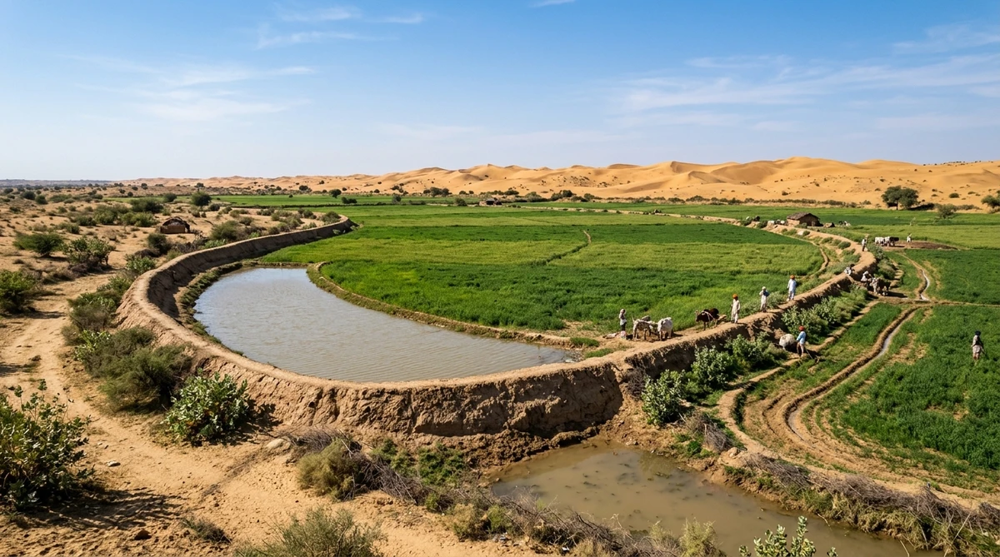
चित्र 3.12: जैसलमेर के 'खादीन' (Khadin) - रेत के टीलों के बीच हरी-भरी कृषि।
🌾 पारंपरिक कृषि तकनीक:
• मिट्टी की अर्ध-चंद्राकार मेढ़ (Bund) द्वारा पानी रोककर थार मरुस्थल में बिना नलकूप के नमी आधारित प्राकृतिक खेती।
- पश्चिमी हिमालय: नदी व झरनों की धाराओं को खेतों तक मोड़ने के लिए 'गुल' (Gul) अथवा 'कुल' (Kul) जैसी वाहिकाएं।
- मेघालय की बांस ड्रिप प्रणाली: 200 वर्ष पुरानी प्रणाली जिसमें बांस के पाइपों से 18-20 लीटर पानी लाकर पौधों की जड़ों पर 20 से 80 बूंद प्रति मिनट टपकाया जाता है।
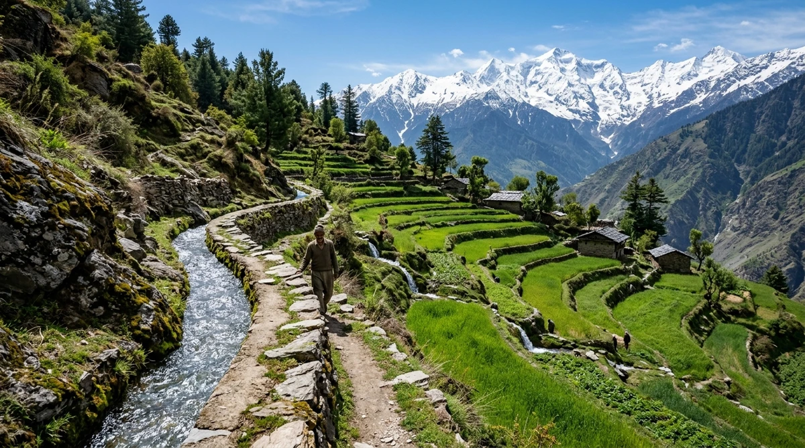
चित्र 3.13: पश्चिमी हिमालय की 'कुल' (Kul) - सीढ़ीदार खेतों में जल प्रवाह।
🏔️ पर्वतीय जल प्रबंधन:
• हिमनद के शुद्ध जल को पत्थरों से बनी संकरी वाहिकाओं द्वारा सीढ़ीदार खेतों तक लाने की प्राचीन तकनीक।
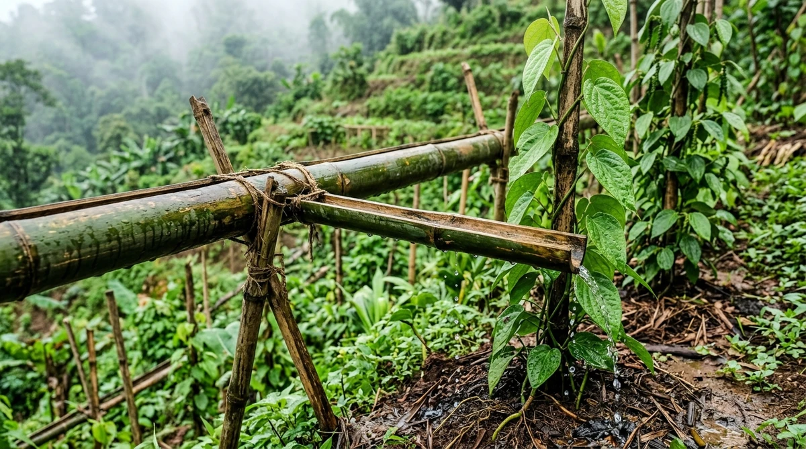
चित्र 3.14: मेघालय की 200 वर्ष पुरानी बांस ड्रिप सिंचाई प्रणाली (Bamboo Drip)।
🎋 शून्य-ऊर्जा पारिस्थितिक सिंचाई:
• बांस के कटे हुए पाइपों के नेटवर्क द्वारा बिना किसी बिजली या मोटर के पौधों की जड़ों पर 20-80 बूंद/मिनट टपकन सिंचाई।
जल सुरक्षा सुनिश्चित करने हेतु आधुनिक सूक्ष्म सिंचाई तकनीकें (जैसे ड्रिप व स्प्रिंकलर) और अपशिष्ट जल पुनर्चक्रण अनिवार्य है।
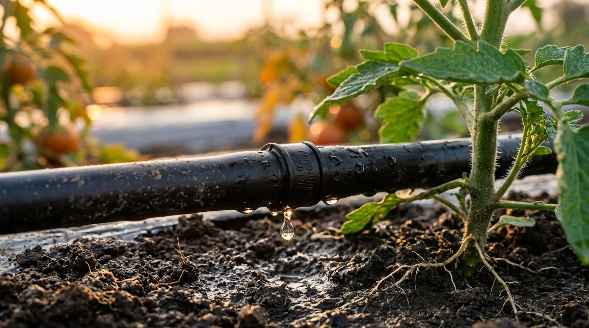
चित्र 3.15: आधुनिक सूक्ष्म ड्रिप सिंचाई (Micro Drip) - 60% जल की बचत।
💧 वैज्ञानिक जल संरक्षण:
• पाइपों के नोजल से सीधे पौधों की जड़ों में पानी की बूंदें टपकाकर जल अपव्यय और वाष्पीकरण को न्यूनतम करना।
📌 परीक्षा उपयोगी मुख्य सारांश बिंदु (Quick Exam Takeaways):
1. जल चक्र: वाष्पीकरण, संघनन और वर्षण द्वारा जल का निरंतर नवीकरण।
2. जल आंकड़े: 96.5% खारा, 2.5% मीठा (जिसका 70% बर्फ और 30% भौम जल)।
3. आधुनिक मंदिर: पं. नेहरू ने बहुउद्देशीय बांधों को आधुनिक भारत के मंदिर कहा।
4. नर्मदा बचाओ: मेधा पाटकर द्वारा सरदार सरोवर बांध विस्थापितों हेतु आंदोलन।
5. पार्लर पानी: पश्चिमी राजस्थान में टांके में संचित शुद्ध वर्षा जल।
6. तमिलनाडु: हर घर में रूफटॉप जल संग्रहण अनिवार्य करने वाला पहला राज्य।
7. बांस ड्रिप: मेघालय में 200 वर्ष पुरानी शून्य-ऊर्जा टपकन सिंचाई प्रणाली।